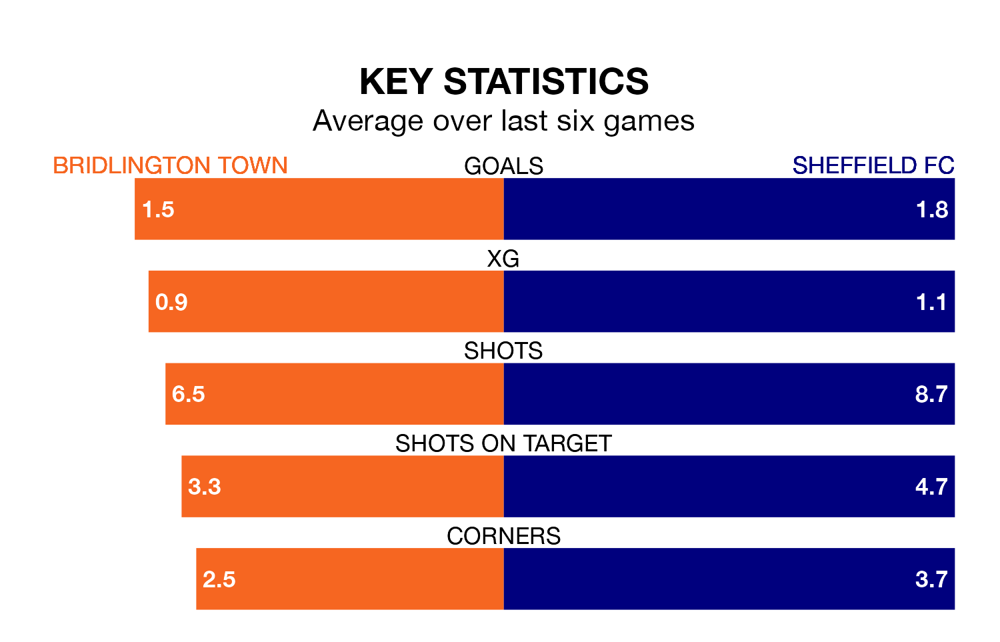

Sheffield FC travel to Bridlington Town on Saturday in the Northern Premier League Division One East.
The visitors come into the game on the back of a win in their last match, having beaten Liversedge 1-0 at home.
Bridlington, meanwhile, lost their last match, 3-0 against Cleethorpes Town.
In the last 10 years, Bridlington and Sheffield FC have played each other on six occasions. Sheffield FC won three of them and they drew three times.
On average, Bridlington scored 1.0 goal and Sheffield FC 2.2 in those matches.
Their last meeting was on September 30, when Sheffield FC won 3-1 at home.
Sheffield FC are 16th in the table after 22 games, of which they have won eight and drawn three, earning 27 points.
Bridlington are two places ahead of the visitors in 14th, with eight wins and five draws putting them on 29 points.
Town are in disappointing form in the Northern Premier League Division One East, with one win and two draws from their last six games.
With three wins and a draw over that period, Sheffield FC's form is better – they have taken 10 points from 18, compared to the home team's five.
With 35 goals in 26 games so far this season, Bridlington are scoring at below the league average rate with 1.3 goals per game. And they are conceding more than average, letting in 44 goals at a rate of 1.7 per game.
Sheffield FC, meanwhile, are average scorers, with 1.6 goals per game. They have conceded 1.7 goals per game.
Updated: 13:04 (UTC), 16/02/24